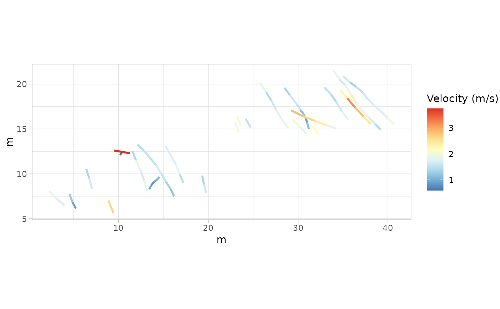
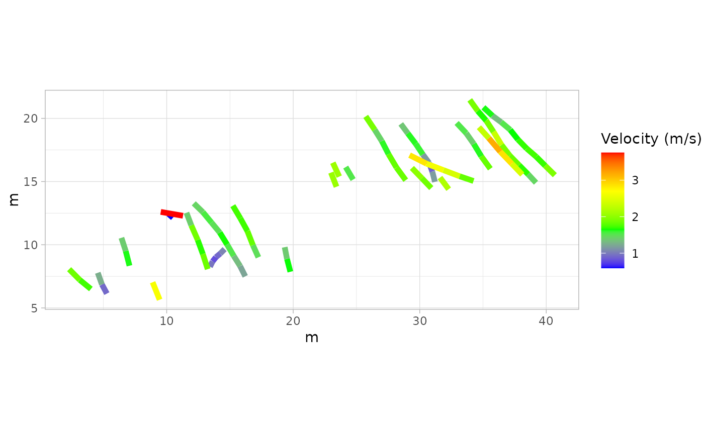

Plot trajectories colored by velocity or relative stride length
Source:R/plot_velocity.R
plot_velocity.Rdplot_velocity() creates a plot of trajectories, colored by either velocity or relative stride length from track and track velocity R objects. The function uses ggplot2 package for visualization and allows customization of line width and color gradients.
Arguments
- data
A
trackR object, which is a list consisting of two elements:Trajectories: A list of interpolated trajectories, where each trajectory is a series of midpoints between consecutive footprints.Footprints: A list of data frames containing footprint coordinates, metadata (e.g., image reference, ID), and a marker indicating whether the footprint is actual or inferred.
- trackvel
A
track velocityR object consisting of a list where each element corresponds to a track and contains velocity or relative stride length data.- param
A character string specifying the parameter to plot. Options are:
"V"for velocity."RSL"for relative stride length. IfNULL, the default value"V"will be used.
- lwd
Numeric. Line width for the plotted trajectories. Default is
1.- colours
A vector of colors to use for the gradient. Default is a predefined set of colors.
- legend
Logical. If
TRUE, the legend will be shown. IfFALSE, the legend will be removed. Default isTRUE.
Details
The function creates a plot where each trajectory is colored based on the specified parameter ("V" for velocity or "RSL" for relative stride length). The ggplot2 package is used for plotting.
The color gradient for the parameter is applied using scale_color_gradientn(). The color palette can be customized via the colours argument.
Author
Humberto G. Ferrón
humberto.ferron@uv.es
Macroevolution and Functional Morphology Research Group (www.macrofun.es)
Cavanilles Institute of Biodiversity and Evolutionary Biology
Calle Catedrático José Beltrán Martínez, nº 2
46980 Paterna - Valencia - Spain
Phone: +34 (9635) 44477
Examples
# Example 1: Plot Trajectories Colored by Velocity with Default Settings (MountTom dataset)
# Hip heights for each track in the MountTom dataset
H_mounttom <- c(
1.380, 1.404, 1.320, 1.736, 1.364, 1.432, 1.508, 1.768, 1.600, 1.848,
1.532, 1.532, 0.760, 1.532, 1.688, 1.620, 0.636, 1.784, 1.676, 1.872,
1.648, 1.760, 1.612
)
# Calculate velocities using the default Method "A"
V_mounttom <- velocity_track(MountTom, H = H_mounttom)
# Plot trajectories colored by velocity
plot1 <- plot_velocity(MountTom, V_mounttom, param = "V")
print(plot1)

# Example 2: Plot Trajectories Colored by Relative Stride Length with Default Settings
# (PaluxyRiver dataset)
# Hip heights for each track in the PaluxyRiver dataset
H_paluxyriver <- c(3.472, 2.200)
# Specify different methods for different tracks
Method_paluxyriver <- c("A", "B")
# Calculate velocities using specified methods
V_paluxyriver <- velocity_track(PaluxyRiver, H = H_paluxyriver, method = Method_paluxyriver)
# Plot trajectories colored by relative stride length
plot2 <- plot_velocity(PaluxyRiver, V_paluxyriver, param = "RSL")
print(plot2)
# Example 3: Plot Trajectories Colored by Velocity with Custom Line Width and Colors
# (MountTom dataset)
# Custom colors and line width
custom_colours <- c("blue", "green", "yellow", "red")
custom_lwd <- 2
# Plot trajectories with custom colors and line width
plot3 <- plot_velocity(MountTom, V_mounttom,
param = "V", lwd = custom_lwd,
colours = custom_colours
)
print(plot3)

# Example 4: Plot Trajectories Colored by Relative Stride Length with Custom Line Width
# and No Legend (PaluxyRiver dataset)
# Custom colors and line width
custom_colours_rsl <- c("purple", "orange", "pink", "gray")
custom_lwd_rsl <- 1.5
# Plot trajectories with custom colors, line width, and no legend
plot4 <- plot_velocity(PaluxyRiver, V_paluxyriver,
param = "RSL", lwd = custom_lwd_rsl,
colours = custom_colours_rsl, legend = FALSE
)
print(plot4)